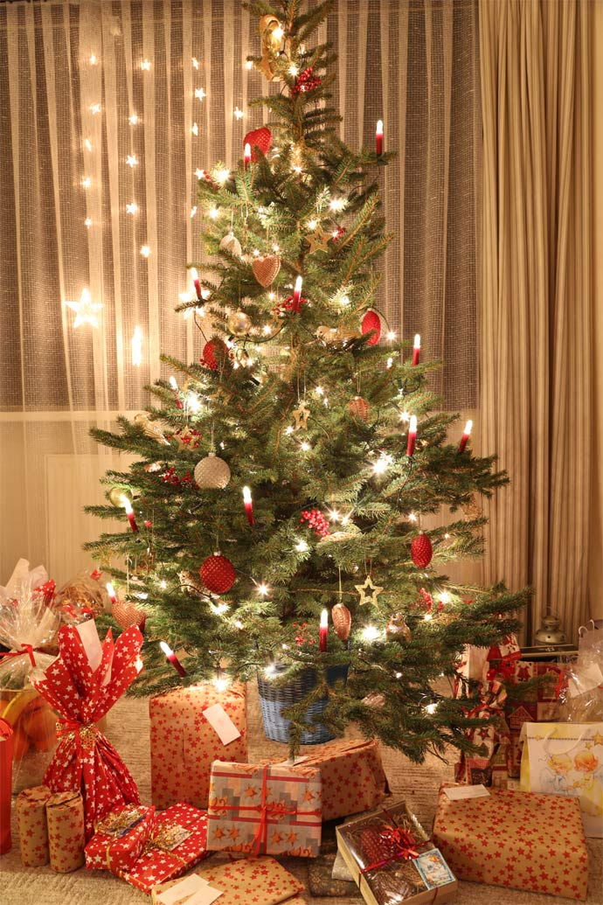
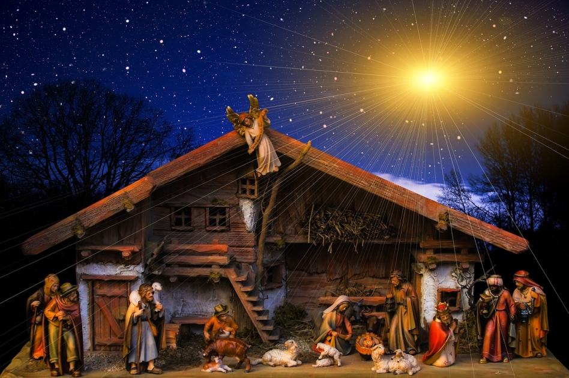
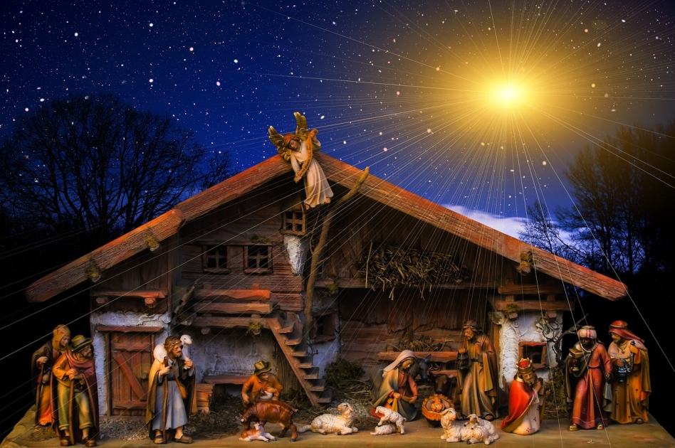

Vánoce jsou ideální příležitostí zkrášlit svůj domov a vytvořit kouzelnou atmosféru. Tradiční dekorace mají své nezastupitelné místo – pojďte se podívat na ty nejkrásnější.

 


Adventí věnec: Symbol čekání na Štědrý den. Obvykle bývá ozdoben jehličím, svíčkami, šiškami a mašlemi, přičemž každou adventní neděli se zapaluje jedna svíčka.
Vánoční stromeček: Neodmyslitelný prvek svátků, zdobený skleněnými koulemi, řetězy, světýlky a figurkami. Je centrem rodinného setkávání během Štědrého večera.
Betlém: Tradiční dekorace připomínající narození Ježíše. Může být dřevěný, keramický nebo papírový, často umístěný pod stromečkem nebo na čestném místě v domě.
Vánoční hvězda: Ať už živá rostlina s výraznými červenými listy, nebo zavěšená dekorace, hvězda je symbolem Vánoc a přináší do prostoru slavnostní nádech.